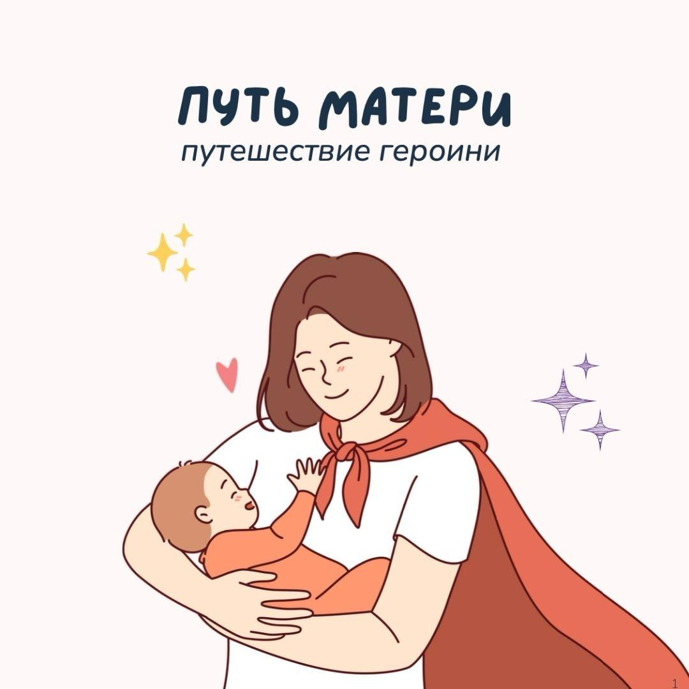
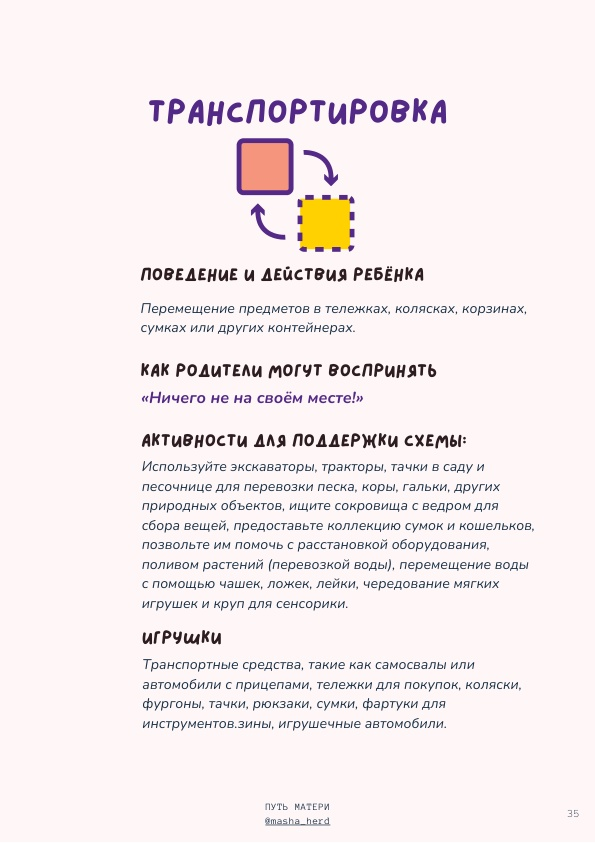
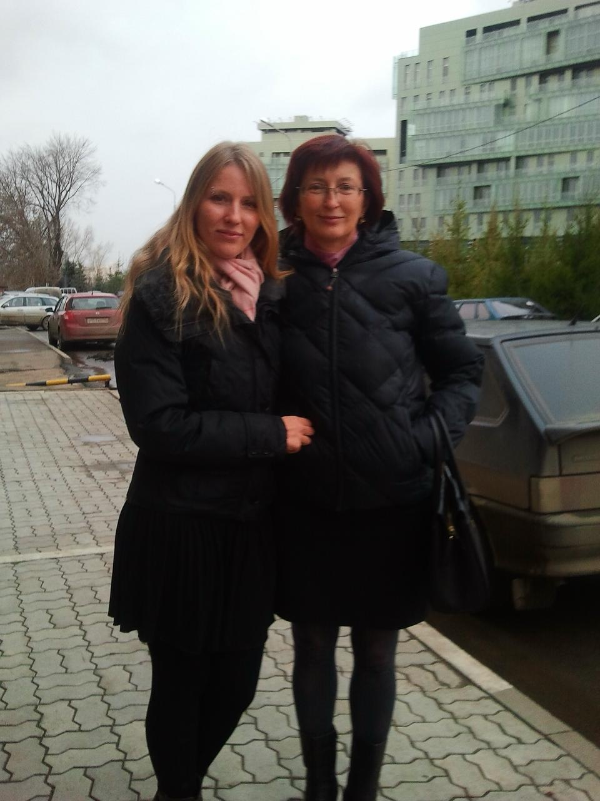

Путь матери: путешествие героини
быть рядом
с ребёнком.
и с собой.
Аудиопутешествие для мам, которым хочется играть с ребёнком с удовольствием, понимать его чувства и находить место своим желаниям среди семейных дел.
Посмотреть, что я смогу попробоватьСамостоятельно, в Telegram.
С моим голосом, заданиями и рабочей тетрадью.

Знакомый день
ты любишь своего ребёнка.
и устаёшь от бесконечного «надо».
Придумать занятие. Выдержать детское расстройство. Закончить дела. А когда наконец появляется свободная минута, бывает трудно вспомнить, чего хочется тебе самой.
Хочется проводить время вместе, но играть по обязанности совсем не в кайф.
Ребёнок злится или плачет. Ты хочешь поддержать его, а подходящие слова не приходят.
В планах есть работа, дом и семья. Свои желания снова остаются на потом.
Что ты возьмёшь в свою обычную жизнь
подходящие игры.
слова поддержки.
внимание к себе.
Подбирать игру, в которой интересно вам обоим
Понимать повторяющиеся действия ребёнка в игре — схемы — и его склонности к исследованию и обучению — диспозиции. В тетради есть объяснения и примеры, которые помогают использовать эти наблюдения в занятиях с ребёнком.
У тебя останется свой набор идей, а не ещё одно требование развлекать ребёнка весь день.
Находить слова, когда у ребёнка сильные чувства
Различать эмоцию и поведение, пробовать называть переживания и говорить о границах. В словаре можно подсмотреть фразу, когда собственных слов не хватает.
Например: «Я понимаю, что ты хочешь играть дальше, но сейчас время спать.»
Замечать, что нужно тебе, и выбирать посильную поддержку
Разобраться со своими ролями и нагрузкой, записать желания и собрать то, что помогает тебе в трудный момент. Отдельное задание посвящено словам, которыми ты обращаешься к себе.
У тебя будут свои записи и выбранное действие, к которому можно вернуться в обычный день.
Это то, над чем ты работаешь в заданиях. Прослушивание само по себе не гарантирует спокойствия или перемен в отношениях.
Настоящие страницы рабочей тетради
сказка с вполне
земными заданиями
За «Эликсиром спокойствия» — твой список способов поддержки. За «Кубком игры» — занятия, которые ты выбираешь для своей семьи.
Листай три фрагмента. Страницу можно открыть крупнее; на телефоне увеличенное изображение прокручивается.
С. 35 · Ребёнок переносит вещи с места на место. Как понять его интерес и предложить игру.

Твоё путешествие
шесть остановок.
в своём темпе
Аудио, чтение и небольшие задания ведут от вопросов о ребёнке к собственным желаниям. На каждой остановке ты создаёшь свой «артефакт» — запись или памятку, которая остаётся с тобой.
01Зов сердца
+
Какие качества ты хочешь поддерживать в ребёнке и что уже делаешь для этого? Ты сформулируешь свои ориентиры, чтобы выбирать действия осмысленнее.
Карта мечтаний · твои ценности и направление.
Аудио 10:25 · вопросы и листы для записей.
02Мир игры
+
Ты понаблюдаешь за повторяющимися действиями ребёнка, выберешь подходящую игру и попробуешь присоединиться так, чтобы это было приятно и тебе.
Кубок игры · свой набор занятий.
Аудио 36:08 · примеры игр и наблюдение в течение недели.
03Пещера чувств
+
Ты заметишь, какие ситуации трудны именно для тебя, что уже помогает и какие способы поддержки хочется попробовать.
Эликсир спокойствия · личная памятка поддержки.
Аудио 12:38 · вопросы о состоянии и своих потребностях.
04Испытание души
+
Ты выберешь практику по возрасту ребёнка и попробуешь говорить с ним о чувствах. Для малыша, который ещё не говорит, есть способы откликаться на его переживания.
Кристаллы эмоций · слова и приёмы для разговора.
Текстовое руководство и задание, без отдельного аудио.
05Освобождение от оков
+
Ты посмотришь на свои роли, желания и нагрузку. Что хочется оставить? Чему вернуть место? Где могла бы пригодиться помощь?
Зеркало будущего · твои желания и образ своей жизни.
Вопросы и письменная практика, без отдельного аудио.
06Мудрость матери
+
Ты заметишь привычные критичные фразы о себе и попробуешь сформулировать их бережнее. Словарь материнских фраз поможет подобрать слова для ребёнка.
Амулет целостности · напоминание о пройденном пути; рядом — твои фразы поддержки.
Аудио 13:51 · словарь и завершающая практика.

на моём дне рождения
Маша Хёрд · автор путешествия
в честь моей мамы.
и для нас, мам.
7 октября — день рождения моей мамы. В её честь я создала это путешествие.
Когда я сама стала мамой, вопрос, как быть для ребёнка и при этом оставаться собой, перестал быть отвлечённым. Мне хотелось и радости вместе, и возможности жить свою жизнь.
«Все время что-то влезает на пути к себе..»
Из моего приглашения в первый практикум, 8 октября 2024 года.
Тогда я читала «Путешествие героини» и рассказывала об этом в своём канале. Так появился образ собственного пути женщины: со своими желаниями и правилами, а не только с чужими ожиданиями.
Сначала мы проходили этот путь в живом кругу. Сейчас ты можешь пройти самостоятельную версию: слушать мой голос, отвечать на вопросы и пробовать то, что подходит твоей семье.
Из первого живого потока
маленькие действия,
которые участницы замечали сами
«Сделала карту, возможно, она будет меняться/дополняться по ходу путешествия»
«услышала сигналы усталости тела после первого занятия по танцам, и не пошла на второе (обычно у меня два по вторникам и четвергам). Почитала в это время в удовольствие вместо занятия «делами».»
Чтобы начать, не нужен свободный отпуск
сначала послушать.
потом попробовать что-то своё.
Внутри четыре аудио длительностью от 10 до 36 минут. Их можно ставить на паузу. Для записей и упражнений нужно отдельное внимание; весь путь не сводится к часу прослушивания.
Не обязательно печатать всю тетрадь. Можно выбрать нужные листы или отвечать в обычном блокноте. Ты проходишь сама, без группы, которую надо догонять, и без отправки заданий на проверку.
Один самостоятельный формат
Путь матери:
путешествие героини
- Закрытый Telegram-канал с последовательностью шести этапов.
- Четыре аудио, текстовые пояснения и задания.
- Рабочая тетрадь со схемами поведения и диспозициями ребёнка, объяснениями и примерами их применения, листами для записей и словарём фраз.
Без живых встреч, личных консультаций, проверки заданий и сопровождаемого чата.
3 900 ₽ или 50 USD
Разовая покупка.
Цены действующих платёжных страниц.
Доступ к материалам открыт, пока у тебя есть доступ к Telegram. Если ты скачаешь материалы к себе на компьютер, они останутся с тобой навсегда.
Доступ предоставляется в течение 24 часов после оплаты. Если ссылка не пришла, напиши на coachmashaherd@gmail.com с подтверждением оплаты.
Перед оплатой ознакомься с офертой.
Перед решением
что ещё важно знать
Для какого возраста детей?
+
Больше всего примеров для мам малышей и дошкольников: особенно подробно разобраны игровые схемы до 7 лет. В руководстве по чувствам есть рекомендации до 14 лет. Если тебе нужна подробная работа именно с подростковыми конфликтами, это не профильная программа о них.
Я совсем не люблю играть. Мне подойдёт?
+
Здесь можно исследовать, какие занятия нравятся и тебе, а не заставлять себя любить любую детскую игру. Ты выбираешь посильный вариант из примеров и наблюдаешь за ребёнком. Постоянно быть аниматором не требуется.
А если у меня сейчас мало сил?
+
Материалы можно слушать частями и возвращаться к заданиям. Но курс не заменяет сон, бытовую помощь или работу со специалистом. Если сил нет даже на повседневные дела, не нужно заставлять себя начинать ещё один проект.
Это новый поток с Машей?
+
Нет, это самостоятельная версия. Я веду тебя голосом и вопросами в готовых материалах. Встреч, личной обратной связи и нового круга участниц в покупку не входит.
Это поможет перестать срываться?
+
Ты сможешь понаблюдать за своими реакциями, собрать способы поддержки и попробовать другой язык общения. Обещать, что срывов больше не будет, я не могу. Это образовательный продукт, а не терапия или лечение.
Как я получу доступ и как долго он будет открыт?
+
Материалы находятся в закрытом Telegram-канале. Доступ отправляется по контактам, указанным при оплате, в течение 24 часов. Он будет открыт, пока у тебя есть доступ к Telegram. Если ты скачаешь материалы к себе на компьютер, они останутся с тобой навсегда.
Куда писать по доступу или возврату?
+
Контакт, указанный на платёжной странице: coachmashaherd@gmail.com. По возврату обратись с данными заказа; условия описаны в опубликованной оферте.
у мамы тоже есть мечты